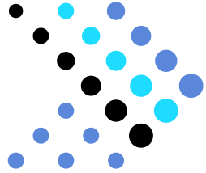

SQL dobry na (prawie) wszystko
z Presto/Trino
Perspektywa... ma znaczenie :)


SEQUEL: A STRUCTURED ENGLISH QUERY LANGUAGE
SEQUEL is intended as a data base sublanguage for both the professional programmer and the more infrequent data base user.
SELECT
country.country_name_eng,
SUM(CASE WHEN call.id IS NOT NULL THEN 1 ELSE 0 END) AS calls,
AVG(
ISNULL(DATEDIFF(SECOND, call.start_time, call.end_time), 0)
) AS avg_difference
FROM country
LEFT JOIN city ON city.country_id = country.id
LEFT JOIN customer ON city.id = customer.city_id
LEFT JOIN call ON call.customer_id = customer.id
GROUP BY
country.id,
country.country_name_eng
HAVING AVG(
ISNULL(DATEDIFF(SECOND, call.start_time, call.end_time), 0)
) > (SELECT AVG(
DATEDIFF(SECOND, call.start_time, call.end_time)
) FROM call)
ORDER BY calls DESC, country.id ASC;
Rozwiązania?
- Data

Presto?
- Facebook => dużo danych + Hadoop
- Nowy soft - Presto
- Rozproszony silnik SQL (ANSI)
- Dostęp do danych tam, gdzie leżą
- OSS od 2013
- Pluginy i connectory do różnych źródeł danych
PrestoDB, PrestoSQL, Trino, ...

2019
SQL
DB
2020

Demo
Dzięki!
- Newsletter + raport JS: mat3e.github.io/trendy
- Prezka: mat3e.github.io/talks/sql/wdi21
- Kod: github.com/mat3e/trino-demo